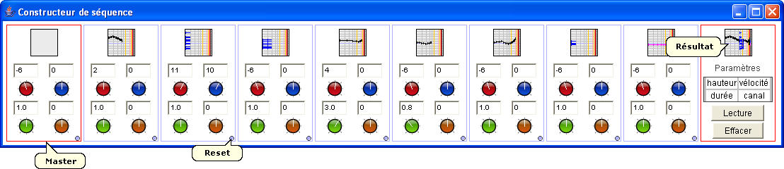

Le constructeur de séquence fonctionne à la manière des séquenceurs analogiques : il contient 8 cases dans lesquelles on glisse des expressions. Pour chaque case, la hauteur, la vélocité, la durée et le canal MIDI peuvent être changés : le réglage se fait par un mouvement vertical de la souris sur les boutons rotatifs, et peut être affiné par un appui sur Ctrl. De plus, un bouton reset est disponible. Le constructeur de séquence peut être utilisé en temps-réel : la séquence du contenu de chaque case est jouée en boucle, les paramètres et le contenu des cases peuvent être changés dynamiquement.
Le master situé à gauche permet de réaliser des réglages globaux : un objet musical peut être glissé et recopié dans les 8 cases, la hauteur, la vélocité, la durée et le canal MIDI peuvent être changés globalement. Le résultat est disponible dans la case de droite.